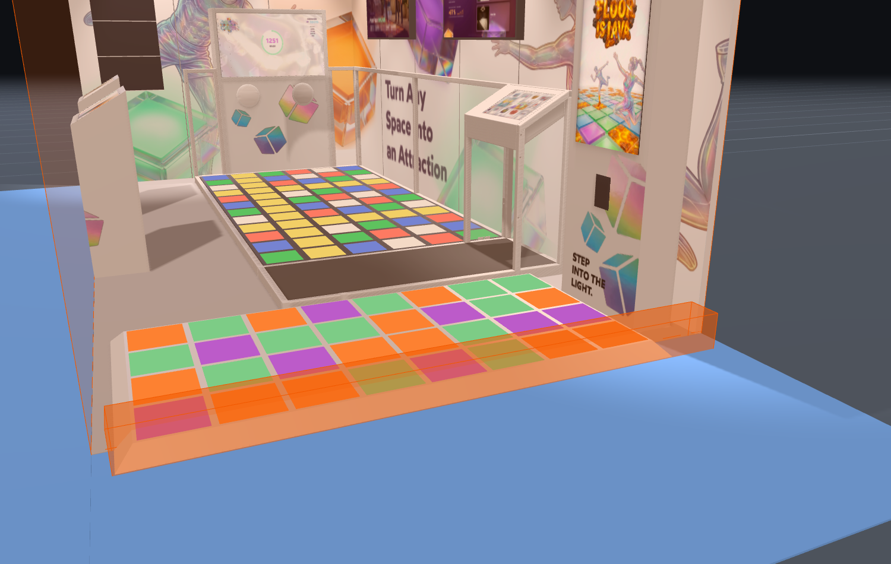
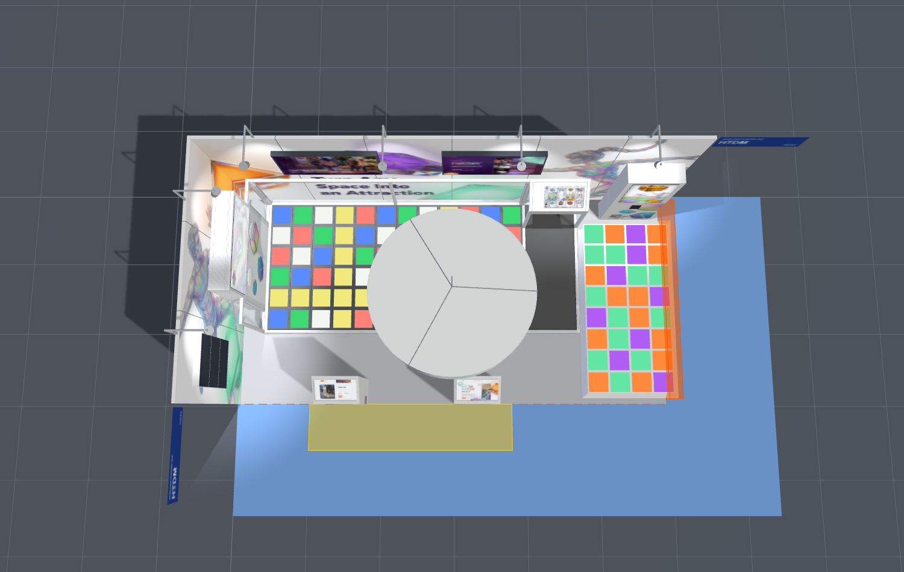

N1
Arcade přesahuje 187 mm přes hranici stánku do uličky
Porušení · pokuta

- Pravidlo
- Veškerá výstavní aktivita jen v pronajaté ploše; nic nesmí přesahovat hranici stánku do uličky.
„Exhibitors are prohibited from engaging in any exhibit activity in any space other than that which has been contracted."
- Stav v návrhu
- Podél 6m stěny je potřeba 6 127 mm (panel 40 + vůle 50 + mini 4 677 + arcade 1 360), stěna má jen 5 940 mm → podlaha arcade leží 187 mm v uličce.
- Pokuta při ponechání
- €300 + ztráta 1 roku seniority („Awning/Overhang Beyond Stand Boundaries"); při posouzení jako exponát v uličce až €600 + 2 roky („Aisle Infringement" / „Product Displayed Outside of Stand"). K tomu vynucená přestavba přímo na místě.
- Jak napravit
-
- DoporučenoZkrátit podlahu arcade o 1 sloupec dlaždic (300 mm, rastr 4×8 → 3×8): potřeba klesne na 5 827 mm → rezerva 113 mm.
- Vynechat boční šikminy (−160 mm) a snížit vůli mini od stěny A z 50 na 23 mm (−27 mm) → vyjde přesně na nulu. Křehké: stojí na odhadované délce stěny.
- V obou případech před výrobou potvrdit stavební délku 6m stěny u GES — 5 940 mm je odhad (viz riziko R4).